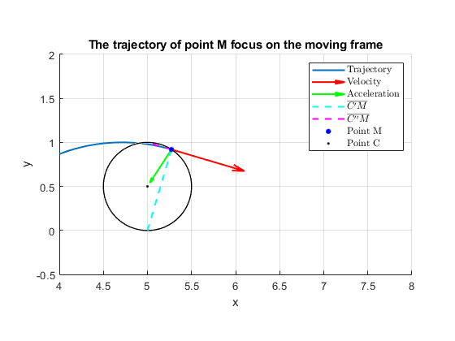
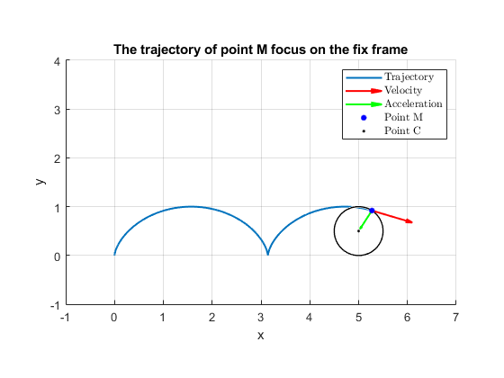

Advanced Dynamics HW.3
Programer: PO-HSUN WU Last edit date: 2021/10/31 19:30
Contents
Formula of motion
clear;clc;close all syms t r theta omega real theta = omega*t; r_C = [r*theta r]; r_Cp = [r*theta 0]; r_Cpp = [r*theta 2*r]; r_M = [r*(theta-sin(theta)) r*(1-cos(theta))]; r_CpM = simplify(r_M-r_Cp); r_CppM = simplify(r_M-r_Cpp); v_Cp = simplify(diff(r_Cp, t)); v_M = simplify(diff(r_M, t)); mag_v_M = simplify(sqrt(v_M(1)^2+v_M(2)^2)); DotProduct_r_CpM_v = simplify(dot(r_CpM, v_M)); DotProduct_r_CppM_v = simplify(dot(r_CpM, r_CppM)); fprintf("The dot product between rCpM and v is %s. And it's orthogonal!!! \n", char(DotProduct_r_CpM_v)) fprintf("The dot product between rCppM and v is %s. And it's orthogonal too!!! \n", char(DotProduct_r_CppM_v)) a_M = diff(v_M,t);
The dot product between rCpM and v is 0. And it's orthogonal!!! The dot product between rCppM and v is 0. And it's orthogonal too!!!
Calculate the values of the motion
Setup some condition
tn = 0:0.01:10;
rn = .5;
omegan = 1;
parameters = {tn, rn, omegan};
% Substitute the condition values to the equation of motion
position_M = double(subs(r_M', {t, r, omega}, parameters));
position_C = double(subs(r_C', {t, r, omega}, parameters));
position_Cp = double(subs(r_Cp', {t, r, omega}, parameters));
position_Cpp = double(subs(r_Cpp', {t, r, omega}, parameters));
velocity_M = double(subs(v_M', {t, r, omega}, parameters));
Acceleration_M = double(subs(a_M', {t, r, omega}, parameters));
Animate of the motion
Set of the figure config: {Show reference, Focus on moving frame, Title of the plot, Set of legend name}
FigureConfig = {{true, true, 'The trajectory of point M focus on the moving frame'},
{false, false, 'The trajectory of point M focus on the fix frame'}};
% Change the animate play speed
AnimateSpeed = 50;
tspan = 1:AnimateSpeed:length(tn);
for frame = 1:length(FigureConfig)
figure()
for i = tspan
% Find out the values until the current time
EndPosition_M = position_M(:,i);
EndPosition_C = position_C(:,i);
EndPosition_Cp = position_Cp(:,i);
EndPosition_Cpp = position_Cpp(:,i);
EndVelocityVector_M = velocity_M(:,i);
EndAccVector_M = Acceleration_M(:,i);
% Reset the current figure
clf
% Plot out the figure
hold on; daspect([1 1 1])
plot(position_M(1,1:i), position_M(2,1:i), 'LineWidth', 1.5) % Plot the trajectory
viscircles(EndPosition_C', rn, 'LineWidth', 1, 'Color', 'k'); % Plot the circle
quiver(EndPosition_M(1), EndPosition_M(2), EndVelocityVector_M(1), EndVelocityVector_M(2), ...
'LineWidth', 1.5, 'Color', 'r', 'MaxHeadSize', 0.5); % Draw the velocity vector of point M
quiver(EndPosition_M(1), EndPosition_M(2), EndAccVector_M(1), EndAccVector_M(2), ...
'LineWidth', 1.5, 'Color', 'g', 'MaxHeadSize', 0.5); % Draw the acceleration of point M
if FigureConfig{frame}{1} == true
Vector_CpM = {[position_M(1,i) position_Cp(1,i)], [position_M(2,i) position_Cp(2,i)]};
plot(Vector_CpM{1}, Vector_CpM{2}, '--', 'LineWidth', 1.5, 'Color', 'c')
Vector_CppM = {[position_M(1,i) position_Cpp(1,i)], [position_M(2,i) position_Cpp(2,i)]};
plot(Vector_CppM{1}, Vector_CppM{2}, '--', 'LineWidth', 1.5, 'Color', 'm')
end
plot(position_M(1,i), position_M(2,i), '.', 'Color', 'b', 'MarkerSize', 15) % Draw the point M
plot(position_C(1,i), position_C(2,i), '.', 'Color', 'k', 'MarkerSize', 5) % Draw the point C
title(FigureConfig{frame}{3})
if FigureConfig{frame}{1} == true
legend('Trajectory', 'Velocity', 'Acceleration', "$\overline{C'M}$", "$\overline{C''M}$", 'Point M', 'Point C', 'Interpreter', 'latex')
else
legend('Trajectory', 'Velocity', 'Acceleration', 'Point M', 'Point C', 'Interpreter', 'latex')
end
xlabel('x'); ylabel('y')
if FigureConfig{frame}{2} == true
xlim([position_C(1,i)-1 position_C(1,i)+3]) % Focus on the point C
ylim([-0.5 2])
else
xlim([-1 7])
ylim([-1 4])
end
grid()
drawnow
end
end
 